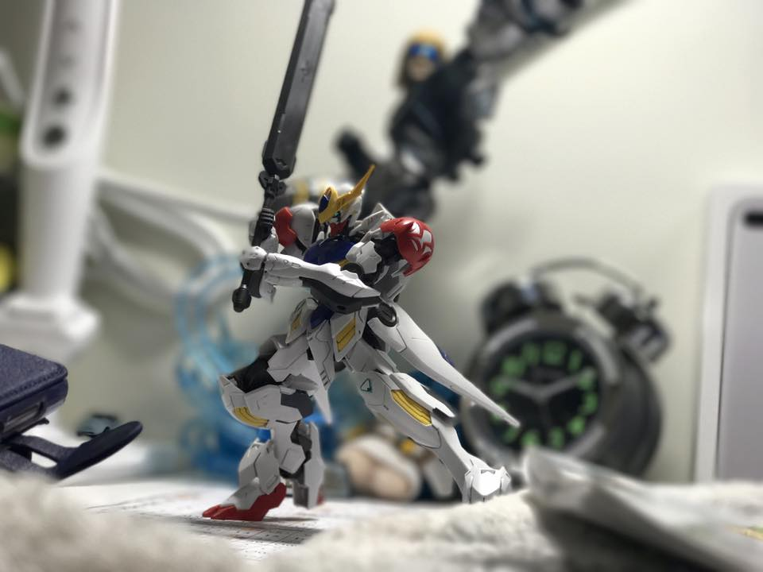

家庭背景
關於我的家庭背景
我來自高雄路竹，家庭原本應該會有七個人，但發生了些事，大約是在我出生不久後，父親在法庭上爭取到了我與姐姐的扶養權，因此，我是出自單親家庭的孩子，家庭成員除了父親與姐姐外，還有祖父母以及姑姑，父親在氣體公司上班，姑姑則是在國際企業擔任經理的角色，因此家中收入算是穩定，但我仍會想減輕家中經濟的負擔，漸漸的培養出替人著想的心，不去過度追求昂貴的物品，能夠自行支付的東西會自行存錢購買，這個家庭雖然缺少了母親，但這樣的家庭對我而言，已經足夠。
母親在法庭獲得的是探視權，兩禮拜一次的過末相處使我更能認識母親，與母親的家庭也能藉由周末的相處更有交集， 也因此，我變相有了兩個家庭，兩個截然不同的家庭，唯一相同的，便是我遭遇挫折時，來自兩方的關心、支持與陪伴，使我能更勇敢地面對挫折，更有信心的踏出堅實的一步。
高中生涯
關於高中的我
很不幸的，我的高中生活並不順遂，與同學的相處出了一些狀況，我不想說是被霸凌什麼的，畢竟我自己可能也有些問題，我不知道我惹到了他們什麼，也已經不想知道了，當時導致自己身心狀況並不好，也嘗試去看了心裡醫生等等，嘗試吃藥控制，直到轉學後才有改善，但已經造成了我不喜歡和不熟的人往來，排斥與人交談，簡單來說，就是典型的社交障礙。
因此，我喜歡獨自一個人的感覺，會讓我比較自在一點，也因此，我喜歡像是組模型那類可以自己一個人進行的活動，這類的活動很花時間，也就造就了我不喜歡出門的生活方式，尤其是組模型的時候，從剪下零件、修整湯口、組合、貼貼紙、上墨線等等的工作，甚至還有後續的噴漆、上色等等，常常一做就是一整天，也因此造就了我宅系的特質。
無法再度奔跑的雙腳
這件事發生在高二的上學期，寒假結束後開學的第一天，測100公尺時，或許是熱身沒做足吧，我的腳在起跑時的第一秒後發出了一個很響亮的聲音，起初以為只是平常像是拉筋時的骨頭聲，但隨著終點越來越近，
我的左腳漸漸抬不起來了，只能單跪姿停在終點線上，我的腳斷了，嚴格來說，是髖關節被我扯斷了，好消息，我比別人多了一個禮拜的寒假，壞消息，我獲得了三個月的跛腳期和六個月的止痛藥，阿對了，還有一整個學期，來自同班同學的嘲笑，幫大忙了。
那麼問題來了，斷腳跟斷髖關節差在哪呢，概念很簡單，拿自行車當例子，斷腳是輪框壞了，斷髖關節是連接輪框的位子壞了，醫生雖然說他會根據時間自己癒合，但就跟焊接過後的東西還會有再次斷掉的風險一樣，每當我的腳有過大的動作時，那個疼痛感總是提醒著我已經沒辦法像以前那樣了，無法蹲下超過十分鐘，以及走路和奔跑時不時的陣痛感，久而久之，心理陰影帶給我的影響更大，害怕他會在某一天又再次斷掉，或許總有一天他會再斷一次，那時候應該就得要動手術接回去了，至少會給我他有「接好」的感覺。
宅宅養成計畫
在網上衝浪，一句英文是這麼說的，背後的涵義便是在如海般遼闊的網路上探索，隨著海面到達不同的領域學習，最初的念頭只是為了找新遊戲玩打發時間，卻在無數次按下 Enter鍵的過程中，成為了我人生中不可或缺的部分，只要是和電腦相關的都會想探索一番，從硬體設備、軟體應用、影片剪輯、程式設計等等⋯⋯省有我踏足過的足跡，直至現在，我依然在探索著。 是的，就如同現在的孩子，我是一位忠實的遊戲玩家，熱衷於遊戲，為了好的遊戲體驗，便開始認識電腦相關的知識從基礎的硬體設備認識開始，到組裝的細節，硬件完整的組裝程序，再到硬體的超頻處理等等皆有研究，不過，僅僅止於研究，直到國三會考的成績出爐，家裡認同我的努力讓我組一台電腦，我才擁有了自己的夥伴，身上的零件便是活用自己硬體知識的最佳寫照，也因為有了他，我才能擴展更遠的領域，朝向更加遼闊的海面繼續航行。直到上了大學以後，我因為需求的關係買了新的電腦，現在則是新的夥伴陪伴我在台北打拼。
打牌打牌打牌打牌
用手上僅有的牌解決不出門的問題
這個興趣的起因來自於家裡人希望我能找點能夠出門向外走走的興趣，嚴格來說，是遠離電腦的興趣，畢竟經歷過腳斷掉的復原期，因此都在進行一些室內的活動，大概是在高二時，在Youtube上看到了一部有關「遊戲王」實體卡牌的影片，內容是在分享動畫中與現實中的對局差別，而那個差異可不是蓋的，引起了我極大的興趣，而且就某方面來說也算是童年未補足的一部份，剛好轉學後的高中附近就有一間還算大的卡店，於是乎，把以前開盒的卡整理了一下，邀上了幾位也有興趣加入的高中同學，我開始了我的打牌日子。
為了打牌的興趣去學日文的我
遊戲王的卡牌絕大多數都是日文版，其次是英文版，中文版雖然有，但數量跟日本製的壓縮機一樣稀少，相較之下日文版的流通量最大也最好取得，因此大多數的玩家皆使用日文版，有些較貴的卡則是用美英版本。 起初在打的情況是這樣的，我與朋友一小時的對局內，超過四十分鐘的時間都在找卡片效果的翻譯，遊戲體驗很差，常常打到一半就得用手機查效果，那時我便決定要學習日文，就僅僅只為是為了看懂卡片效果，從最基礎的平假名和片假名開始，基礎的字彙，卡片本身效果的文法等等，前前後後大約學習了將近半年才看得懂，好消息是我逐漸能夠脫離翻譯，看得懂卡片效果了，壞消息則是我所會的日文僅止於效果文，日常和別人用日文交談甚麼的我可辦不到。
用手上的牌來交友
不需要過多的交談，不需要認識你的對手，只要用手上的牌就能與對手對話，這是每位有在打牌的人皆擁有的特質，在這裡的人皆有一個共通點，享受並喜歡著這個遊戲，只需要一個操作，或者是一張惹人厭的卡，卡店內就會出現忽高忽低的驚嘆聲與哀號聲，我不喜歡人多的地方，卻很喜歡這樣的環境，常常跟朋友打著打著就會有人上來搭話能不能打上一局，然後就會聊起打牌的大小事，因此我漸漸變得喜歡去卡店，無論是觀賞對局也好或是與他人交流也好，我喜歡這個地方，這個除了家裡之外第二個感受到自在的地方，同時也讓我的社交障礙好了那麼一點點，我的興趣不再只是興趣，現在也是我建立友誼的橋樑。
抽牌準備進主要 漸漸往賽場向玩家進發
我想在上了大學以後能夠繼續打牌，因此除了科系外還特別挑選了擁有卡牌遊戲相關社團的大學，最終我來到了這裡，還記得第一天入社就被副社長的反主流牌組狠狠地輾壓，雖然有所耳聞，但不是牌組向性的問題，而是我的觀念、操作細節和對牌組的熟悉度上輸上了一大截，讓我見識到了賽場型玩家與我這種玩家最大的不同點，不只是為了贏，而是去思考該怎麼做才能贏，一個禮拜後，副社長成為了官方賽大專杯的冠軍，我可以很驕傲的說我被大專杯冠軍狠狠的打爆了。
加入社團後除了接觸新的卡牌遊戲外，也學習著像是卡時點、自排連鎖、資源繳交的時機點等等更多的進階技巧，並開始參加社內每周舉辦的比賽，到後來還參加了店家賽，甚至到了民間舉辦的五百人個人賽，一步一步，開始學習「如何取勝」。最近則是與社內的朋友一同參加了由官方所舉辦的3V3賽事，取得了對第一次參加的我們來說很棒的成績，也取得了我實質意義上的低一個參賽證明。
目前則是想將打牌的興趣和大學的所學做結合，嘗試架設頻道推廣這款卡牌遊戲，就如當初看到的影片那樣，讓更多人加入這款遊戲的行列。
來資傳系的起因
大概是小學的時候，名為「實況」的新影片類型邁入了我的視野，並深深的著迷於此，夢想著自己也能和影片中的人樣，成為一名責況主，我從他們的影片中獲得了快樂，我也想用這個方式來分享我的快樂。從簡單的錄製遊戲過程開始，到 用免費的剪輯程式剪輯精華片段，然後上傅至自己的頻道，了無人煙的觀看數表明了現實，沒人想看這樣粗糙的影片，因此，我將頻道打掉重練，開始研究如何打磨自己的影片，至少，身為創作者的我得先能夠完整的看完。 為此，我參考了眾多寊況主的影片，發覺好的觀影品質來自人聲處理、字幕、轉場，以及合適的背景音樂、封面製作，標題的吸引程度等等的包裝，皆是很大的學問，因此我開始嘗試不同的剪輯程式，而其中我最上手的的是 VegasPro，用它學習了不少基本技巧，舉凡轉場、字幕、音軌調整去除綠幕和關鍵幀的應用，皆是它教會了我。目前則嘗試駕馭Pr和 Ae，雖然一邊研究還得翻著書有些不自在，有時還得邊看著影片的教學一邊練習，也得習慣不 樣的工具位置，但在過程中學習到的新技巧還是很令我開心，期盼有一天我能像手腳般活用它們。 很榮幸的，我生在一個媒體產業蓬勃發展的年代，不論是作為影音平台的自媒體，網路平台的直播產業，以及 Netfix、Apple TV 等逐漸取代電視產業的新媒體等等，自國小起接觸了這個產業，我便深深著迷於此，如果說遊戲是啟蒙我研究電腦的基石，那麼傳播便是我能活用我的研究大展身手的舞台，因此，我想成為傳播產業的一份子，在這個舞台拓展自己的視野。